Python爬虫入门教程：超级简单的Python爬虫教程
这篇 Python 爬虫教程主要讲解以下 5 部分内容：
- 了解网页；
- 使用 requests 库抓取网站数据；
- 使用 Beautiful Soup 解析网页；
- 清洗和组织数据；
- 爬虫攻防战；
了解网页
以中国旅游网首页（http://www.cntour.cn/）为例，抓取中国旅游网首页首条信息（标题和链接），数据以明文的形式出面在源码中。在中国旅游网首页，按快捷键【Ctrl+U】打开源码页面，如图 1 所示。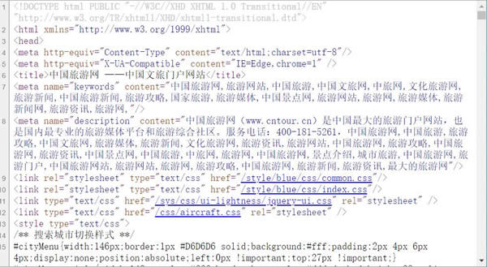
图 1 中国旅游网首页源码
认识网页结构
网页一般由三部分组成，分别是 HTML（超文本标记语言）、CSS（层叠样式表）和 JScript（活动脚本语言）。HTML
HTML 是整个网页的结构，相当于整个网站的框架。带“＜”、“＞”符号的都是属于 HTML 的标签，并且标签都是成对出现的。常见的标签如下：
<html>..</html> 表示标记中间的元素是网页
<body>..</body> 表示用户可见的内容
<div>..</div> 表示框架
<p>..</p> 表示段落
<li>..</li>表示列表
<img>..</img>表示图片
<h1>..</h1>表示标题
<a href="">..</a>表示超链接
CSS
CSS 表示样式，图 1 中第 13 行＜style type=＂text/css＂＞表示下面引用一个 CSS，在 CSS 中定义了外观。JScript
JScript 表示功能。交互的内容和各种特效都在 JScript 中，JScript 描述了网站中的各种功能。如果用人体来比喻，HTML 是人的骨架，并且定义了人的嘴巴、眼睛、耳朵等要长在哪里。CSS 是人的外观细节，如嘴巴长什么样子，眼睛是双眼皮还是单眼皮，是大眼睛还是小眼睛，皮肤是黑色的还是白色的等。JScript 表示人的技能，例如跳舞、唱歌或者演奏乐器等。
写一个简单的 HTML
通过编写和修改 HTML，可以更好地理解 HTML。首先打开一个记事本，然后输入下面的内容：
<html>
<head>
<title> Python 3 爬虫与数据清洗入门与实战</title>
</head>
<body>
<div>
<p>Python 3爬虫与数据清洗入门与实战</p>
</div>
<div>
<ul>
<li><a href="http://c.biancheng.net">爬虫</a></li>
<li>数据清洗</li>
</ul>
</div>
</body>
运行该文件后的效果，如图 2 所示。
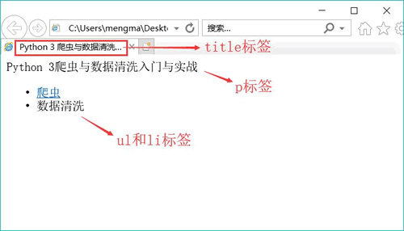
图 2
这段代码只是用到了 HTML，读者可以自行修改代码中的中文，然后观察其变化。
关于爬虫的合法性
几乎每一个网站都有一个名为 robots.txt 的文档，当然也有部分网站没有设定 robots.txt。对于没有设定 robots.txt 的网站可以通过网络爬虫获取没有口令加密的数据，也就是该网站所有页面数据都可以爬取。如果网站有 robots.txt 文档，就要判断是否有禁止访客获取的数据。以淘宝网为例，在浏览器中访问 https://www.taobao.com/robots.txt，如图 3 所示。
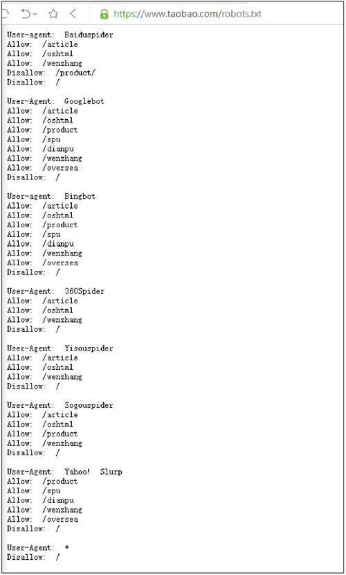
图 3 淘宝网的robots.txt文件内容
淘宝网允许部分爬虫访问它的部分路径，而对于没有得到允许的用户，则全部禁止爬取，代码如下：
User-Agent:*
Disallow:/
使用 requests 库请求网站
安装 requests 库
首先在 PyCharm 中安装 requests 库，为此打开 PyCharm，单击“File”（文件）菜单，选择“Setting for New Projects...”命令，如图 4 所示。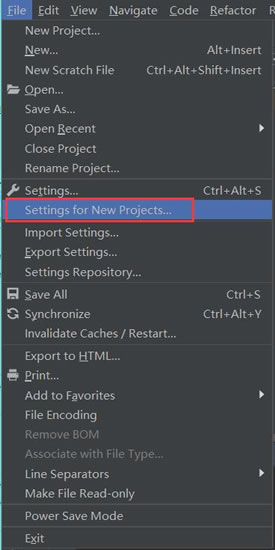
图 4
选择“Project Interpreter”（项目编译器）命令，确认当前选择的编译器，然后单击右上角的加号，如图 5 所示。
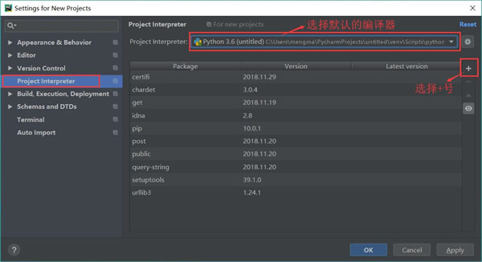
图 5
在搜索框输入：requests（注意，一定要输入完整，不然容易出错），然后单击左下角的“Install Package”（安装库）按钮。如图 6 所示：
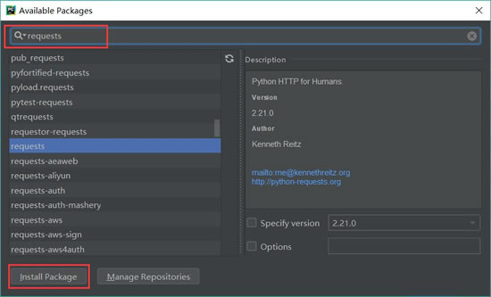
图 6
安装完成后，会在 Install Package 上显示“Package‘requests’ installed successfully”（库的请求已成功安装），如图 7 所示；如果安装不成功将会显示提示信息。
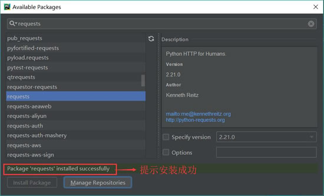
图 7 安装成功
爬虫的基本原理
网页请求的过程分为两个环节：- Request （请求）：每一个展示在用户面前的网页都必须经过这一步，也就是向服务器发送访问请求。
- Response（响应）：服务器在接收到用户的请求后，会验证请求的有效性，然后向用户（客户端）发送响应的内容，客户端接收服务器响应的内容，将内容展示出来，就是我们所熟悉的网页请求，如图 8 所示。
图 8 Response相应
网页请求的方式也分为两种：
- GET：最常见的方式，一般用于获取或者查询资源信息，也是大多数网站使用的方式，响应速度快。
- POST：相比 GET 方式，多了以表单形式上传参数的功能，因此除查询信息外，还可以修改信息。
所以，在写爬虫前要先确定向谁发送请求，用什么方式发送。
使用 GET 方式抓取数据
复制任意一条首页首条新闻的标题，在源码页面按【Ctrl+F】组合键调出搜索框，将标题粘贴在搜索框中，然后按【Enter】键。如图 8 所示，标题可以在源码中搜索到，请求对象是www.cntour.cn，请求方式是GET（所有在源码中的数据请求方式都是GET），如图 9 所示。 确定好请求对象和方式后，在 PyCharm 中输入以下代码：
import requests #导入requests包 url = 'http://www.cntour.cn/' strhtml = requests.get(url) #Get方式获取网页数据 print(strhtml.text)运行结果如图 10 所示：
图 10 运行结果效果图（点此查看高清大图）
加载库使用的语句是 import+库的名字。在上述过程中，加载 requests 库的语句是：import requests。
用 GET 方式获取数据需要调用 requests 库中的 get 方法，使用方法是在 requests 后输入英文点号，如下所示：
requests.get
将获取到的数据存到 strhtml 变量中，代码如下：strhtml = request.get(url)
这个时候 strhtml 是一个 URL 对象，它代表整个网页，但此时只需要网页中的源码，下面的语句表示网页源码：strhtml.text
使用 POST 方式抓取数据
首先输入有道翻译的网址：http://fanyi.youdao.com/，进入有道翻译页面。按快捷键 F12，进入开发者模式，单击 Network，此时内容为空，如图 11 所示：
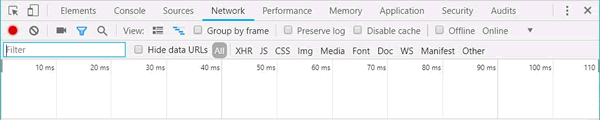
图 11
在有道翻译中输入“我爱中国”，单击“翻译”按钮，如图 12 所示：
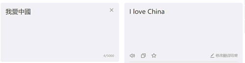
图 12
在开发者模式中，依次单击“Network”按钮和“XHR”按钮，找到翻译数据，如图 13 所示：
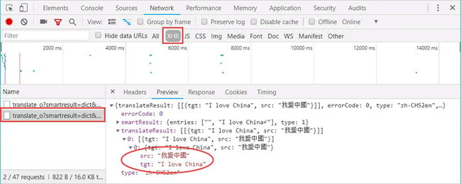
图 13
单击 Headers，发现请求数据的方式为 POST。如图 14 所示：
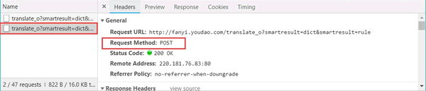
图 14
找到数据所在之处并且明确请求方式之后，接下来开始撰写爬虫。
首先，将 Headers 中的 URL 复制出来，并赋值给 url，代码如下：
url = 'http://fanyi.youdao.com/translate_o?smartresult=dict&smartresult=rule'
POST 的请求获取数据的方式不同于 GET，POST 请求数据必须构建请求头才可以。Form Data 中的请求参数如图 15 所示：
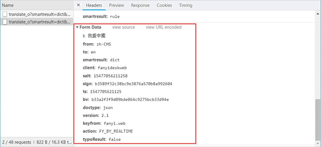
图 15
将其复制并构建一个新字典：
From_data={'i':'我愛中國','from':'zh-CHS','to':'en','smartresult':'dict','client':'fanyideskweb','salt':'15477056211258','sign':'b3589f32c38bc9e3876a570b8a992604','ts':'1547705621125','bv':'b33a2f3f9d09bde064c9275bcb33d94e','doctype':'json','version':'2.1','keyfrom':'fanyi.web','action':'FY_BY_REALTIME','typoResult':'false'}
接下来使用 requests.post 方法请求表单数据，代码如下：
import requests #导入requests包
response = requests.post(url,data=payload)
import json content = json.loads(response.text) print(content['translateResult'][0][0]['tgt'])使用 requests.post 方法抓取有道翻译结果的完整代码如下：
import requests #导入requests包
import json
def get_translate_date(word=None):
url = 'http://fanyi.youdao.com/translate_o?smartresult=dict&smartresult=rule'
From_data={'i':word,'from':'zh-CHS','to':'en','smartresult':'dict','client':'fanyideskweb','salt':'15477056211258','sign':'b3589f32c38bc9e3876a570b8a992604','ts':'1547705621125','bv':'b33a2f3f9d09bde064c9275bcb33d94e','doctype':'json','version':'2.1','keyfrom':'fanyi.web','action':'FY_BY_REALTIME','typoResult':'false'}
#请求表单数据
response = requests.post(url,data=From_data)
#将Json格式字符串转字典
content = json.loads(response.text)
print(content)
#打印翻译后的数据
#print(content['translateResult'][0][0]['tgt'])
if __name__=='__main__':
get_translate_date('我爱中国')
使用 Beautiful Soup 解析网页
通过 requests 库已经可以抓到网页源码，接下来要从源码中找到并提取数据。Beautiful Soup 是 python 的一个库，其最主要的功能是从网页中抓取数据。Beautiful Soup 目前已经被移植到 bs4 库中，也就是说在导入 Beautiful Soup 时需要先安装 bs4 库。安装 bs4 库的方式如图 16 所示:
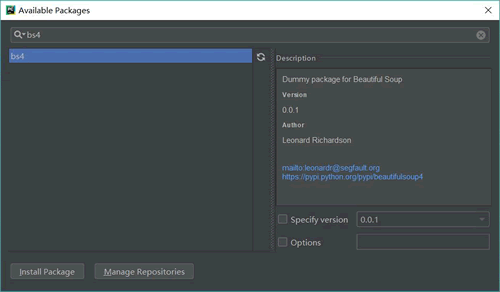
图 16
安装好 bs4 库以后，还需安装 lxml 库。如果我们不安装 lxml 库，就会使用 Python 默认的解析器。尽管 Beautiful Soup 既支持 Python 标准库中的 HTML 解析器又支持一些第三方解析器，但是 lxml 库具有功能更加强大、速度更快的特点，因此笔者推荐安装 lxml 库。
安装 Python 第三方库后，输入下面的代码，即可开启 Beautiful Soup 之旅：
import requests #导入requests包
from bs4 import BeautifulSoup
url='http://www.cntour.cn/'
strhtml=requests.get(url)
soup=BeautifulSoup(strhtml.text,'lxml')
data = soup.select('#main>div>div.mtop.firstMod.clearfix>div.centerBox>ul.newsList>li>a')
print(data)
代码运行结果如图 17 所示。
Beautiful Soup 库能够轻松解析网页信息，它被集成在 bs4 库中，需要时可以从 bs4 库中调用。其表达语句如下：
from bs4 import BeautifulSoup
首先，HTML 文档将被转换成 Unicode 编码格式，然后 Beautiful Soup 选择最合适的解析器来解析这段文档，此处指定 lxml 解析器进行解析。解析后便将复杂的 HTML 文档转换成树形结构，并且每个节点都是 Python 对象。这里将解析后的文档存储到新建的变量 soup 中，代码如下：soup=BeautifulSoup(strhtml.text,'lxml')
接下来用 select（选择器）定位数据，定位数据时需要使用浏览器的开发者模式，将鼠标光标停留在对应的数据位置并右击，然后在快捷菜单中选择“检查”命令，如图 18 所示：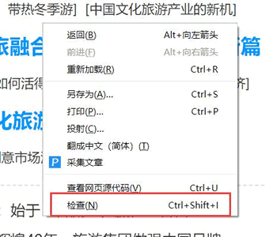
图 18
随后在浏览器右侧会弹出开发者界面，右侧高亮的代码（参见图 19(b)）对应着左侧高亮的数据文本（参见图 19(a)）。右击右侧高亮数据，在弹出的快捷菜单中选择“Copy”➔“Copy Selector”命令，便可以自动复制路径。
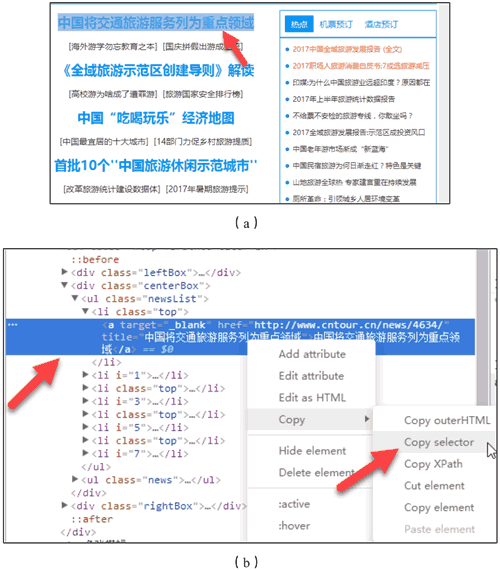
图 19 复制路径
#main > div > div.mtop.firstMod.clearfix > div.centerBox > ul.newsList > li:nth-child(1) > a
由于这条路径是选中的第一条的路径，而我们需要获取所有的头条新闻，因此将 li：nth-child（1）中冒号（包含冒号）后面的部分删掉，代码如下：#main > div > div.mtop.firstMod.clearfix > div.centerBox > ul.newsList > li > a
使用 soup.select 引用这个路径，代码如下：data = soup.select('#main > div > div.mtop.firstMod.clearfix > div.centerBox > ul.newsList > li > a')
清洗和组织数据
至此，获得了一段目标的 HTML 代码，但还没有把数据提取出来，接下来在 PyCharm 中输入以下代码：
for item in data:
result={
'title':item.get_text(),
'link':item.get('href')
}
print(result)
代码运行结果如图 20 所示：
图 20（点此查看高清大图）
首先明确要提取的数据是标题和链接，标题在＜a＞标签中，提取标签的正文用 get_text() 方法。链接在＜a＞标签的 href 属性中，提取标签中的 href 属性用 get() 方法，在括号中指定要提取的属性数据，即 get(＇href＇)。
从图 20 中可以发现，文章的链接中有一个数字 ID。下面用正则表达式提取这个 ID。需要使用的正则符号如下:
\d匹配数字
+匹配前一个字符1次或多次
import re
for item in data:
result={
"title":item.get_text(),
"link":item.get('href'),
'ID':re.findall('\d+',item.get('href'))
}
print(result)
运行结果如图 21 所示：
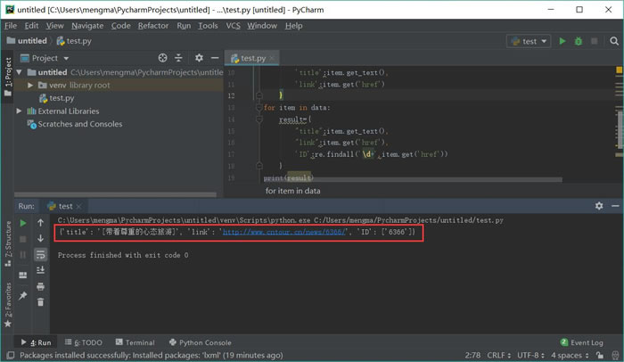
图 21
这里使用 re 库的 findall 方法，第一个参数表示正则表达式，第二个参数表示要提取的文本。
爬虫攻防战
爬虫是模拟人的浏览访问行为，进行数据的批量抓取。当抓取的数据量逐渐增大时，会给被访问的服务器造成很大的压力，甚至有可能崩溃。换句话就是说，服务器是不喜欢有人抓取自己的数据的。那么，网站方面就会针对这些爬虫者，采取一些反爬策略。服务器第一种识别爬虫的方式就是通过检查连接的 useragent 来识别到底是浏览器访问，还是代码访问的。如果是代码访问的话，访问量增大时，服务器会直接封掉来访 IP。
那么应对这种初级的反爬机制，我们应该采取何种举措？
还是以前面创建好的爬虫为例。在进行访问时，我们在开发者环境下不仅可以找到 URL、Form Data，还可以在 Request headers 中构造浏览器的请求头，封装自己。服务器识别浏览器访问的方法就是判断 keyword 是否为 Request headers 下的 User-Agent，如图 22 所示。
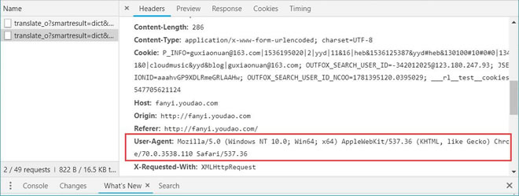
图 22
因此，我们只需要构造这个请求头的参数。创建请求头部信息即可，代码如下：
headers={'User-Agent':'Mozilla/5.0 (Windows NT 10.0; Win64; x64) AppleWebKit/537.36 (KHTML, like Gecko) Chrome/70.0.3538.110 Safari/537.36'}
response = request.get(url,headers=headers)
其原理也很简单，就是统计每个IP的访问频率，该频率超过阈值，就会返回一个验证码，如果真的是用户访问的话，用户就会填写，然后继续访问，如果是代码访问的话，就会被封 IP。
这个问题的解决方案有两个，第一个就是常用的增设延时，每 3 秒钟抓取一次，代码如下：
import time
time.sleep(3)
不管如何访问，服务器的目的就是查出哪些为代码访问，然后封锁 IP。解决办法：为避免被封 IP，在数据采集时经常会使用代理。当然，requests 也有相应的 proxies 属性。
首先，构建自己的代理 IP 池，将其以字典的形式赋值给 proxies，然后传输给 requests，代码如下：
proxies={
"http":"http://10.10.1.10:3128",
"https":"http://10.10.1.10:1080",
}
response = requests.get(url, proxies=proxies)
扩展阅读
本文仅对 Python 爬虫及实现过程做了简明扼要地介绍，仅能使初学者对 python 爬虫有一个浅显的认识，并不能让你完全掌握 Python 爬虫。如果您想全面的学习 Python 爬虫的相关知识，可以跳转至《Python爬虫教程入门到精通》进行学习。关注公众号「站长严长生」，在手机上阅读所有教程，随时随地都能学习。内含一款搜索神器，免费下载全网书籍和视频。

微信扫码关注公众号